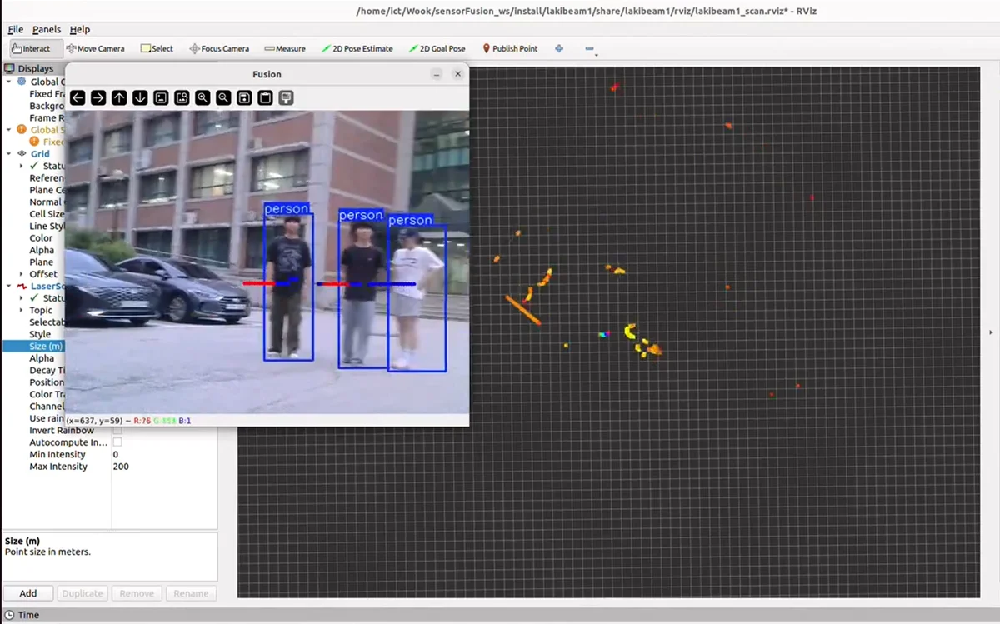
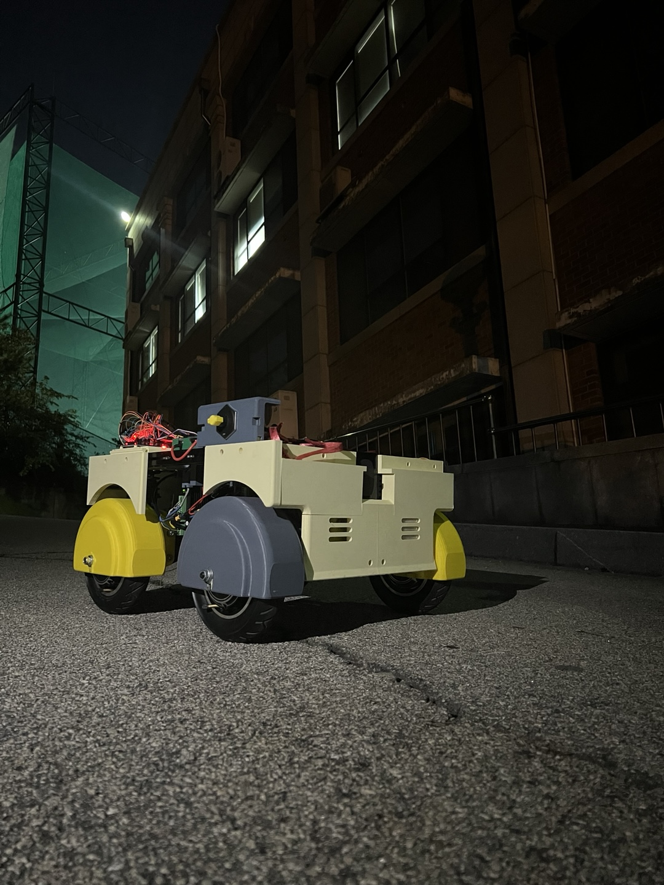

Embedded Control
- 센서 MCU와 구동 MCU Firmware 구성
- FreeRTOS 기반 기능 분리
- 홀센서 기반 PWM 속도 보정
02 - ROBOT SYSTEM INTEGRATION
STM32 및 ROS 2 기반 주행 시스템을 연동한 실외 배달 로봇
WHAT I DID
PROJECT IMAGES

카메라 객체 영역을 기준으로 2D LiDAR 데이터를 필터링한 화면

홀센서 변화를 이용한 정차 보정 동작을 확인한 시험
SYSTEM FLOW
자세와 위치 데이터 수집
센서 데이터 파싱 및 전달
센서 정보와 주행 명령 연동
홀센서 피드백과 안전 제어
PWM 기반 4륜 구동
PROBLEM SOLVING
로봇 중량과 모터 토크 한계로 정지 명령 이후에도 경사 방향으로 밀렸습니다.
추가 하드웨어 없이 홀센서 신호 변화로 이동 방향을 판단했습니다. 밀림 반대 방향으로 최소 PWM을 적용해 제동력을 보완했습니다.
실기기 경사로에서 정차 보정 동작을 확인했습니다.